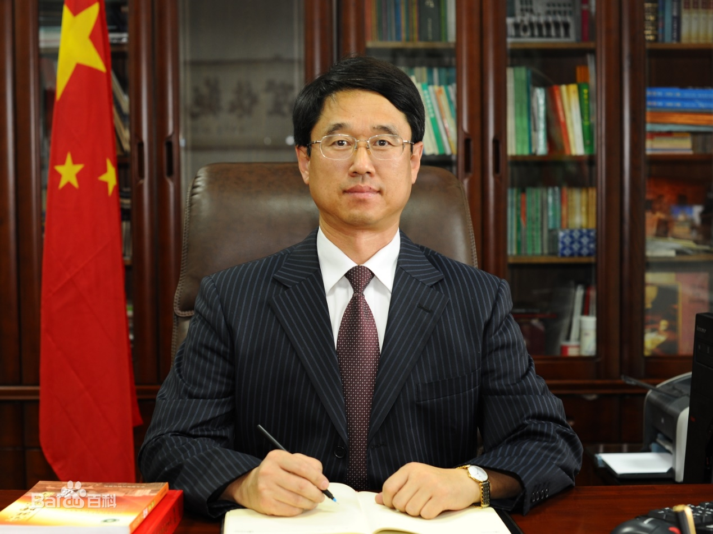
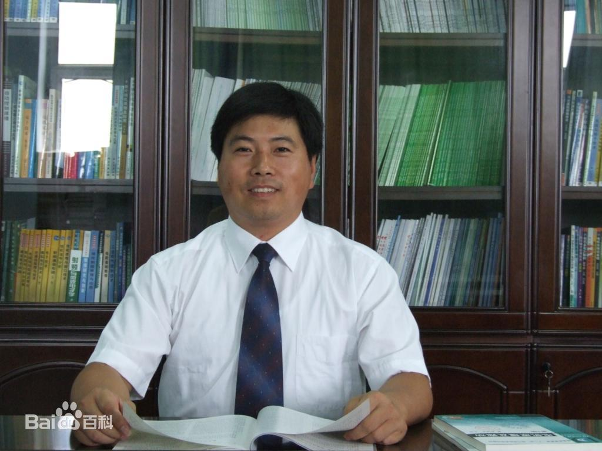

—— 导师介绍 ——
-

穆 钢
穆钢，男，1957年生，汉族，中共党员，博士，教授，博士生导师，首批国家“万人计划”领军人才、全国杰出专业技术人才、国家有突出贡献的中青年专家、百千万人才工程国家级人选、全国优秀科技工作者、享受国务院特殊津贴、国家教学名师和教育部创新团队带头人。作为项目负责人，先后主持过2项国家自然科学基金重点项目、主持国家973项目课题、863项目课题多项，获国家科技进步奖二等奖2项，省部级一等奖3项。获授权发明专利31件、软件著作权6项。发表论文188篇。
-

严干贵
严干贵，男，1971年生，汉族，中共党员，博士研究生，教授，博士生导师，国务院特殊津贴获得者，百千万人才工程国家级人选，国家级有突出贡献中青年专家，长白山学者特聘教授。主持国家自然科学基金项目2项，承担国家自然科学基金重点项目、国际合作交流项目、国家973、863计划课题、国家科技支撑计划项目课题、国家重点研发计划项目课题9项，获国家科技进步奖2项，省部级科研奖励4项。授权发明专利5件，发表SCI/EI期刊论文80余篇。